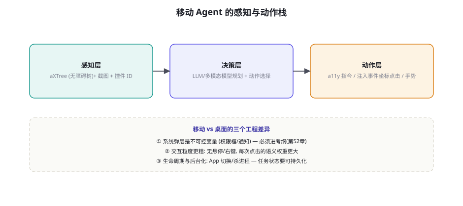
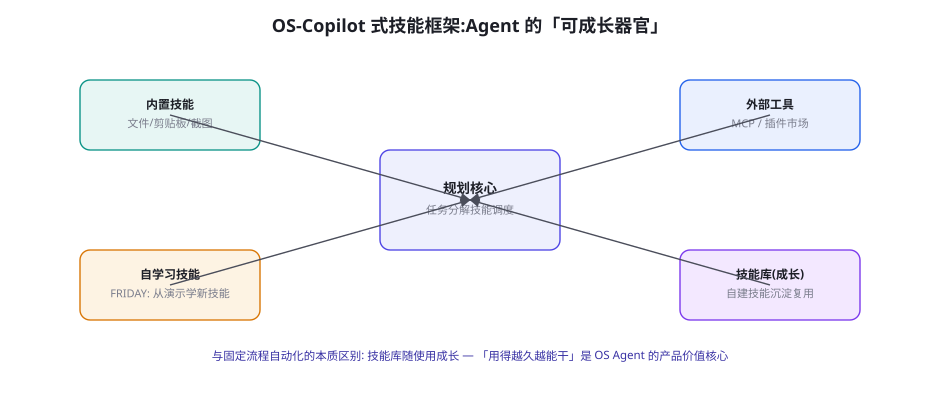

移动与操作系统 Agent：AppAgent 与 OS-Copilot
从浏览器走向手机与桌面操作系统——这是 GUI Agent 的「全场景化」一步：无障碍树成为感知主力、系统弹层成为不可控变量、跨应用任务成为常态。本章讲移动 Agent 的感知-动作栈（AppAgent 路线）、OS-Copilot 的技能框架（可成长的 Agent 器官）、以及移动/OS 域的部署与安全要点。
移动 Agent 的感知-动作栈

三层栈的移动域特化要点：感知层——无障碍树（aXTree）是移动域的主角——Android 的 AccessibilityNodeInfo / iOS 的 Accessibility API 提供了「控件树」（文本、类型、可点击性、资源 ID）——比桌面域更完整（移动 App 的无障碍标签质量普遍高于桌面软件）——但两个坑要避开：① 无障碍标签是「为视障用户写的」不等于「为模型写的」（「按钮 1」「未命名元素」的标签让 aXTree 变成迷宫——感知层要做「标签增强」（结合截图与视觉上下文补全语义——aXTree 与视觉的双路融合在移动域比桌面域更刚需）；② 动态视图的树不稳定（RecyclerView/懒加载让控件树按需生成——「树上没有」不等于「屏幕上没有」——感知层要「树 + 截图交叉」判断完整性）。决策层——移动任务的动作空间比网页更小（tap/long_press/swipe/text/back/home——六原语几乎全覆盖）但「意图粒度更粗」（第 52 章移动差异：一次点击即一次页面跳转）——决策层的提示要显式处理「页面过渡的确认」（动作后页面切了还是没切？——验证步的移动版）。动作层——两条执行通道：无障碍指令（performAction——语义级点击，精准且合规）与事件注入（adb input/坐标点击——普适但粗）——与第 67 章「控件优先、坐标兜底」同构，但移动域的无障碍通道覆盖率高得多（优先级更偏向 a11y 通道）。
AppAgent 路线：从「看 App」到「用 App」
AppAgent（Yang et al. 2024, arXiv:2406.02034（姊妹篇 AppAgent v2 持续演进））给出了移动 Agent 的代表性工程路线，它的两个贡献值得拆解：① 「探索式学习」的 App 使用范式——Agent 首次面对一个 App 时先「自主探索」（点击各控件、观察界面响应、自动记录「动作-效果」文档）——探索产物是一份「App 使用说明书」（每个控件的作用与效果——自生成的工具描述，第 17 章工具文档的自产版）——之后的任务执行基于这份说明书（「先用后学」变成「先学后用」）；② 多模态感知的组合拳——aXTree 提供控件结构 + 截图提供视觉验证 + 探索文档提供语义——三路信息的融合提示设计是工程核心。AppAgent 路线的工程启示：移动域的「冷启动问题」可以通过「探索式自学习」缓解——面对长尾 App（没有现成集成/文档），探索一遍的成本（每个 App 十几分钟）远低于人工开发集成——这是移动 Agent 相对传统自动化的核心经济优势。「探索的合规面」要同步注意：探索即操作（可能触发真实副作用——下单、发消息——探索模式要配合第 60 章的模拟层或「只读探索」约束）。
| 域 | 感知主力 | 动作通道 | 弹层/生命周期 | 部署形态 |
|---|---|---|---|---|
| Android App | aXTree + 截图 | a11y 指令 + adb 注入 | 权限弹窗预授权、通知过滤 | 真机/模拟器集群 |
| iOS App | XCUITest 树 + 截图 | XCUITest / 越狱受限 | 权限弹窗预授权、Siri 冲突 | Mac 集群 + 真机 |
| Windows 桌面 | UI Automation + 窗口截图 | UIA 指令 + 键鼠合成 | UAC 提权、多窗口管理 | VM 池（第 60 章整机档） |
| macOS 桌面 | AX API + 窗口截图 | AXPress + CGEvent | 权限（辅助功能授权）、沙盒限制 | Mac mini 集群 |
「探索式学习」的说明书生成流程给一个可抄的最小实现，它是 AppAgent 思想的代码化起点：
def explore_app(device, app_pkg, budget_clicks=30) -> Manual:
"""探索模式: 生成 App 使用说明书 (只读约束版)。"""
manual = Manual(app_pkg)
device.launch(app_pkg)
visited = set()
while len(visited) < budget_clicks:
page = device.dump() # aXTree + 截图
candidates = [el for el in page.interactive_elements()
if el.stable_id not in visited]
for el in candidates:
# ① 动作前快照 (副作用对比的基线)
before = device.dump()
# ② 只读探索约束: 禁触高危控件 (按钮文本黑名单)
if el.risky_text_match(["删除", "支付", "发送", "确认"]):
manual.record(el, effect="SKIP(高危控件, 待人工)")
continue
# ③ 执行并观察差分
el.perform("click")
wait_page_settle()
after = device.dump()
diff = page_diff(before, after) # 页面变化描述
# ④ 记入说明书: 控件 → 效果 (VLM 语义化)
manual.record(el, effect=vlm.describe(diff, before, after))
device.back() # 返回继续探索
visited.add(el.stable_id)
if no_more(candidates):
break
return manual
# 说明书条目示例:
# [btn: "order_history"] → 跳转到订单列表页, 含筛选器与分页
# [tab: "profile"] → 切换到个人资料页, 表单可编辑
# [btn: "pay_now"] → SKIP(高危, 需人工授权探索)实现的三个工程要点：① 只读约束的实现——「文本黑名单 + 后果白名单」的双重过滤（黑名单挡明显高危，白名单只允许「可返回的页面级操作」——探索的安全边界宁窄勿宽）；② 差分即语义——「效果」的描述来自页面 diff 的 VLM 语义化（跳转/弹窗/内容变化三类）——diff 比全量描述便宜且聚焦；③ back 键的探索节奏——每探索一个控件即返回（深度优先会把自己绕晕——广度优先的探索覆盖更均匀）。生成的说明书直接进第 68.2 节的「三路融合」提示——探索一次，任务受益。说明书本身也是数据（探索轨迹是第 45 章的训练数据源——「探索即数据采集」的移动版）。
OS-Copilot：可成长的技能框架

OS-Copilot 与 FRIDAY（其自进化实例）的核心思想是「Agent 的能力不该是出厂固定的，而应随使用成长」——技能框架的四类组件：① 内置技能——文件系统、剪贴板、截图、进程管理等 OS 原生操作（工具协议的第 17 章标准件）；② 自学习技能（Self-Learning）——面对新任务时「现场造工具」：写一段代码解决眼前问题，验证有效后「沉淀为技能」（FRIDAY 的核心循环：任务 → 代码生成 → 执行验证 → 入技能库——第 47 章数据飞轮的技能版）；③ 外部工具——MCP/插件生态的接入（第 61 章供应链治理在这里生效）；④ 技能库（Skill Library）——自建技能的存储、检索与复用（Voyager 在游戏域验证的「技能库」思想（第 70 章）在 OS 域的移植——技能以「代码 + 描述 + 使用示例」三元组存储，检索按任务语义匹配）。技能框架的治理要点（与第 58-61 章全面接口）：自学习技能是「Agent 自己写的代码」——它的执行必须过沙箱（第 60 章微 VM 档）、沉淀必须过审计（代码审查级的检查——「Agent 写的技能」是供应链投毒的内部通道——第 61 章准入四关的内部版）；技能库的检索要有「权限约束」（高危技能只在高权限会话可检索——技能库是权限体系的一部分，不是独立的工具箱）。
移动/OS 域与浏览器域的分水岭是跨应用任务（「把邮件里的发票附件存到财务系统并登记」——邮件 App × 文件系统 × 财务 App 的三方协作）。跨应用的三个工程难题与对策：① 状态在应用间断档——App 切换后上个 App 的状态不可见（回邮件 App 找附件号？还是记在任务状态里？）——对策：Agent 级的「任务状态外存」（第 25 章记忆工程的 OS 版——跨应用的关键状态显式记录，不依赖应用内状态）；② 应用间的「格式断层」——邮件的附件下载到本地路径、财务系统的上传接口要什么格式——「数据搬运的格式适配」是跨应用任务的主要工作量——对策：格式适配做成「连接器技能」（OS-Copilot 的技能沉淀方向——每个「App 对」的搬运技能一次沉淀反复复用）；③ 权限的跨应用传递——Agent 在邮件 App 有读权限、在财务系统有写权限——组合后能做「单个应用都做不了的事」（读私人邮件写进财务记录）——这是第 58 章混淆代理的 OS 级放大——对策：跨应用任务的「权限交集审查」（任务的权限组合在任务启动时评审——组合权限 ≥ 各自权限之和的风险）。「跨应用任务的评测」同样要专门设计（单应用评测都过的 Agent，跨应用可能全崩——第 53 章「组合失败」的 OS 域版）——把跨应用任务从评测集里独立出来单独统计，是 OS Agent 评测的第一纪律。
用 Android 模拟器跑一个「最小 AppAgent 循环」：装一个你常用的 App，写 50 行脚本完成「aXTree 抓取 → 喂给 VLM → 输出动作 → adb 注入执行」的最小闭环，让 Agent 完成「打开设置里关于手机的页面」（纯浏览、零风险）。跑通后做一次「探索模式」扩展：让 Agent 自主点遍设置主页的全部入口并生成「App 说明书」（记录每个入口的页面）。两小时的实验让你体感三件事：aXTree 的信息质量（哪些标签有用哪些是迷宫）、探索式自学习的工作方式、以及「弹层干扰」的真实频率（系统弹窗会在你最不希望的时候出现）——移动域的三个核心体感，一次拿全。
移动 Agent 的「弹层治理」值得单独成节，因为它在第 52 章被点名为「不可控变量」，工程上需要一套完整的应对体系。弹层的四类与治理策略：① 权限弹层（相机/定位/通知的授权框）——首次出现的时机不可控——治理：部署时「预授权」（adb 预授予全部所需权限 / MDM 通道的批量授权）+ 运行时的「权限框检测与智能应答」（弹层出现 → 识别类型 → 按任务需要授予/拒绝——应答决策本身是 L2 动作要过闸门——「代表用户授权」是高危语义）；② 系统通知横幅——遮挡与误触的双风险——治理：勿扰模式预开（部署配置的一部分）+ 感知层的「横幅过滤」（aXTree 里标记为通知的节点不进决策视野）；③ 应用内弹窗（升级提示、评分邀请、广告）——治理：第 67 章恢复库的「弹窗处理宏」移动版 + 白名单/黑名单的弹窗策略（升级弹窗统一「稍后」，评分邀请统一「关闭」——策略写在配置而非每次决策）；④ 意外模态（来电、低电量对话框、系统更新——完全计划外）——治理：任务的「可中断设计」（状态外存的定期落盘让中断后可续——第 25 章记忆的移动刚需）+ 中断类弹层「永远让位」的优先级规则（来电 > 任务——Agent 不是一个「不肯让路的同事」）。弹层治理的总原则：「可预见的预授权，可识别的走策略，计划外的让位」——三层防御让「不可控变量」变成「可管理变量」——移动 Agent 的稳定性提升，一半来自这里。
部署与安全：真机集群与数据边界
移动/OS Agent 的生产部署形态与安全要点：① 真机/模拟器集群——模拟器适合开发与评测（快照重置、批量并行——第 56 章评测基建的移动版），真机适合验收与生产（传感器、真实网络、厂商差异）——「模拟器开发 + 真机验收」的双轨是标准配置；② 数据边界——移动 Agent 常接触个人数据（通知、短信、相册——aXTree 里全是用户隐私）——第 61 章隐私管线在移动域的最严档：感知层就要脱敏（aXTree 的敏感字段进上下文前掩码——「感知即脱敏」比「后处理脱敏」彻底）；③ 账号与风控——App 的风控系统会识别自动化（输入速度、轨迹特征——真人与 Agent 的行为差异）——「合规自动化」的边界要与目标 App 的服务条款对齐（第 67 章站点友好的移动版——为自己的账号自动化通常合规，为规模化的外部目标自动化通常违规）；④ 电量与资源——常驻 Agent 的资源占用（无障碍服务的持续监听）是移动特有的成本面——「按需唤醒」的架构（任务触发时启动、完成即释放）优于常驻。部署形态的选择题：面向企业内部（公司配发设备上的效率 Agent——数据边界清晰、账号可控）是近期可落地的主战场；面向个人消费者（用户私有设备上的全能助手）是远期愿景（权限与隐私的信任门槛极高）——企业移动 Agent 是「先落地的那个」，消费者移动 Agent 的等待期以「信任建设」计而非「技术成熟」计。
「技能固化管道」的五关审计（自测题 4 的答案骨架）——Agent 自写技能进生产库前的关卡设计：关一：静态检查——语法、依赖清单、API 调用面扫描（只允许白名单 API——禁网络外联、禁文件系统越界——技能的「出生证」）；关二：沙箱试跑——第 60 章微 VM 档的真实执行（输入用「测试任务」，输出与预期语义比对——「它声称能做 X，试跑真的做了 X 吗」）；关三：副作用审计——试跑期间的全量网络/文件日志与「技能声明的作用域」比对（第 61 章行为审计的内部版——声明与行为的 diff）；关四：幂等与回滚验证——技能重复执行的安全性（重跑两次结果一致吗？失败后能回滚吗？——「可重入性」是生产技能的硬要求）；关五：文档与签名——技能的三元组（代码/描述/示例）齐备、描述与行为一致（VLM 抽查验证）、以及签名（谁审计的、审计版本——技能库的可追溯性）。五关全过才入库，入库后还有「试用期」（前 10 次生产使用记录全量日志抽检）——「Agent 写的代码」与「人写的代码」适用同一套生产标准——这是技能框架能否走出 demo 的分水岭。
再补一个移动域特有的「评测集设计」要点，作为本章的工程收尾：移动评测的「真机矩阵」问题。Android 的碎片化让「模拟器上全绿」毫无意义——厂商定制 UI（MIUI/ColorOS 的权限弹层与设置路径各异）、屏幕比例差异、系统版本差异都会让同一个任务在 A 机型成功 B 机型失败。真机矩阵的务实配置：① 覆盖维度优先级——厂商定制层（Top 3 厂商）> Android 大版本（最近 3 个）> 屏幕形态（常规/折叠/平板）> 价位段（性能影响响应时间进而影响等待策略）——按业务用户画像加权选 8~15 台真机（不是越多越好，是「覆盖你的用户分布」）；② 任务的机型敏感性标注——评测集里每个任务标注「预期机型敏感度」（纯逻辑任务标「 insensitive 」只跑两台抽检、UI 密集任务标「sensitive」全矩阵跑）——评测预算花在刀刃上；③ 失败的机型归因——跨机型失败率的差异分析（同一任务在 A 厂商 90%、B 厂商 40%——差异点就是适配工作的地图）。「真机矩阵」与第 52 章「环境参与评测」一脉相承：移动域的环境变量就是机型——评测集的机型覆盖度，等于你对「真实用户分布」的忠诚度。
给本章补最后一个「组织视角」的观察：移动/OS Agent 项目的团队构成与浏览器域相比有一个显著差异——移动端工程师的不可替代性上升。浏览器域的核心工程（Playwright 生态）是相对标准化的 Web 技术，通用后端工程师可以快速上手；移动/OS 域的核心工程（aXTree 的怪癖、各厂商 rom 的行为差异、adb/a11y 的坑、iOS 的沙盒约束）是「多年踩坑积累的手艺」——一个懂「MIUI 权限弹层的触发时序」的工程师，价值不亚于一个会调模型的人。团队配置的参考比例：移动工程（含真机矩阵运维）≈ 40%、Agent 工程（感知/决策/恢复层）≈ 40%、评测与治理 ≈ 20%——与浏览器域（Agent 工程 60%+）的重心迁移反映了域的成熟度差异：越不成熟的域，域知识的权重越大；随生态成熟，重心会逐步回到 Agent 工程本身——这是判断「何时入场」的一个实用信号：当某域的招聘 JD 里「域经验」的要求开始下降、「Agent 工程」的描述开始上升时，说明该域的基建已经收敛——入场的好时机到了。
顺手回应「App 说明书」的资产化问题（探索产出的说明书存哪里、怎么保鲜）：说明书作为「活文档」的三条保鲜纪律——① 版本锚定——说明书与 App 版本号绑定（App 升级 = 说明书标记「待复核」，复核方式不必全量重探——抽检 20% 控件，失败率超阈值才触发重探——第 56 章影子回归的 App 版）；② 使用中修正——任务执行时发现「说明书说的和实际不符」（控件效果变了）——差异即触发单点重探并更新条目（「用着用着就修好了」的自愈机制，与语义缓存的验证戳同构）；③ 说明书共享经济——同类 App 的说明书在企业内共享（各部门探索的说明书集中治理——「说明书库」成为企业移动 Agent 的核心数据资产，其治理遵循第 47 章数据飞轮的全套纪律：采集埋点、质量闸门、隐私脱敏、版本管理）。说明书的估值方式很简单：「一份说明书省下的探索时间 × 使用频次」——高频 App 的说明书是复利资产，低频 App 的说明书按需再探——这也是「哪些 App 值得探索」的投资判断依据。
三个高频疑问
Q：iOS 上做 Agent 真的没戏吗？不是没戏，是「形态受限」——三条现实路径各有边界：① 官方测试框架内（XCUITest）——在 Test 模式下驱动 App（自动化测试的 Agent 化：测试用例由模型生成与维护）——这是当前最合规的形态，但要 Mac 集群且无法跨 App 自由操作；② 无障碍读取 + 有限控制——读屏类能力（VoiceOver API）可做「感知丰富的助手」，动作控制受沙盒严格限制——「推荐+人执行」的教练模式（第 67 章协作档）是适配形态；③ MDM/企业通道——企业设备管理通道（配发设备上的受控自动化）——企业场景的合规自由度显著更高。三条路径的共同启示：iOS 的 Agent 形态由「权限模型」决定，不由技术决定——苹果的沙盒哲学短期不会为 Agent 松动，产品的正确姿势是在受限形态内做价值（iOS 教练模式 + Android 全自动的「双端差异化产品」是务实解）。
Q：OS Agent 会「取代」传统自动化脚本吗？与第 67 章 RPA 的答案同构但有一个新的维度：OS Agent 的「技能沉淀」让它可以自己变成自动化脚本——传统 RPA 的产出是「人写的脚本」，OS-Copilot 类系统的产出是「Agent 自己写的技能」（第一次任务现场解决，第二次起就是脚本级执行）——「Agent 是脚本的前端，脚本是 Agent 的缓存」——这个形态让「取代」的问题变成「迁移路径」的问题：存量脚本（稳定高价值的）继续跑，长尾任务交给 Agent 现场学，学出来的技能经审计后「固化」为新脚本（技能库 → 审计 → 固化的管道）。运维团队的新角色由此清晰：从「写脚本的人」变成「技能的审计与固化者」——这个岗位转变比「被取代」的焦虑更接近真相。
Q：多设备协同（手机+电脑+平板）的 Agent 是不是空中楼阁？不是，且「设备群编排」是 OS Agent 的下一个产品化前沿——工程上的三个台阶：① 设备作为工具——每台设备抽象成一个「远程工具」（设备群的设备注册表 + 能力声明——第 17 章工具协议的设备版：手机声明「能拍照/能扫码」，电脑声明「能跑重计算」）；② 任务的路由——按任务需求选设备（扫码任务 → 手机，数据分析 → 电脑——第 32 章模型路由的设备版）；③ 状态的跨设备续接——「在手机上开始的任务在电脑上继续」（任务状态外存的跨设备同步——第 25 章记忆的同步版）。三个台阶在技术上都不新（都是既有工程的重组），新的只是「组合的场景」——它与跨应用任务共享同一个工程母题：「状态在边界间的显式传递」——跨应用、跨设备、乃至未来的跨模态，都是这一个母题的变奏。把母题抓牢，多设备协同就是「自然的下一章」而非「空中楼阁」。
本章在全书网络中的连接：上游是第 67 章（GUI 循环与阶梯——本章的平行扩展）、第 66 章（感知层——aXTree 视觉双路的融合）；横向与第 60 章（权限——跨应用组合权限的审查）、第 61 章（隐私——感知即脱敏）、第 25 章（记忆——任务状态外存）深度接口；下游通向第 70 章（Voyager 的技能库思想——OS 技能框架的游戏域原型）、第 85 章（实战篇的移动项目）。复习锚点：三层栈图（68-1）与三个移动差异、AppAgent 探索式学习、四域栈对照表（68-1 表）、技能框架四组件图（68-2）、跨应用三难题、部署四要点、iOS 三路径。
「跨设备协同」的最小可行架构补一个实现骨架（上一节 Q3 三台阶的第一台阶的代码化）：
class DeviceRegistry:
"""设备群的注册表: 每台设备 = 一个带能力声明的远程工具。"""
def register(self, device: Device):
# 能力声明 (工具协议的设备版, 第17章)
caps = device.probe() # {camera, scanner, compute, location}
self.devices[device.id] = DeviceEntry(
caps=caps,
latency_profile=device.bench(), # 就近调度的依据
trust_zone=device.zone(), # 权限域 (第58章信任边界)
)
def route(self, need: str, constraints=None) -> Device:
"""任务 → 设备的路由 (第32章模型路由的设备版)。"""
candidates = [d for d in self.devices.values()
if need in d.caps
and (constraints is None or constraints(d))]
return min(candidates, key=lambda d: d.latency_profile.p50)
# 任务路由示例: "扫码识别这盒药的批号"
# → route("scanner") → 手机 (caps 含 scanner, 延迟最低)
# → phone.call("scan_text", region="barcode")
# → 返回文本 → 继续主任务 (状态在 Agent 侧, 不在设备侧)骨架里的两个设计立场值得点出：① 「状态在 Agent 侧，不在设备侧」——设备只是「能力的外设」（第 44 章 MCP 时代「工具是外设」哲学的设备版）——设备间的任务续接不靠设备记忆，靠 Agent 的任务状态外存（第 25 章）——这是跨设备协同与跨应用任务共享「状态显式传递」母题的代码落点；② trust_zone 进路由决策——敏感任务只路由进对应信任域的设备（涉及私人照片的任务不路由到公用电脑——权限模型与设备模型合一）。这个最小架构在任何「多设备」产品叙事里都是第一块地基——先让设备可寻址、可路由，协同的故事才立得住。
本章小结
- 移动三层栈：aXTree 主角（标签增强 + 树截图交叉）、决策（六原语 + 过渡确认）、动作（a11y 优先 adb 兜底）。
- AppAgent 探索式学习：自生成「App 说明书」缓解长尾冷启动——探索要配模拟层或只读约束。
- OS-Copilot 技能框架：内置 + 自学习 + 外部 + 技能库——「Agent 自己写的技能」要过沙箱与审计（内部供应链）。
- 跨应用任务三难题：状态断档（外存）、格式断层（连接器技能）、权限组合放大（交集审查）——评测单列。
- 部署：模拟器开发 + 真机验收；感知即脱敏；合规自动化与风控对齐；按需唤醒优于常驻。
- 企业移动 Agent 先落地，消费者形态的瓶颈在信任不在技术；多设备协同与跨应用共享「状态显式传递」母题。
自测题
- 跑本页模拟器实验：你的 aXTree 里「迷宫标签」占多少？标签增强用了什么策略？
- 为你最常用的三个 App 设计「探索说明书」的结构：每个控件记录什么字段？探索的副作用边界在哪？
- 设计一个跨应用任务的权限交集审查：哪个组合触发了审查？审查的判定规则是什么？
- 「技能固化管道」的审计关卡设计：Agent 写的技能要过哪五关才能进生产脚本库？
参考文献与延伸阅读
- Yang, C. et al. (2024). AppAgent: Multimodal Agents as Smartphone Users. arXiv:2406.02034
- Wang, Z. et al. (2024). OS-Copilot: Towards Generalist Computer Agent with Self-Improvement. arXiv:2402.07456
- Zhang, Z. et al. (2024). Mobile-Agent: Autonomous Multi-Modal Mobile Device Agent. arXiv:2401.16158
- Rawles, C. et al. (2024). AndroidWorld / Android in the Wild (AitW) 数据集. arXiv:2405.14573
- Zeng, Y. et al. (2024). AgentTrek: Agent Trajectory Synthesis via Guiding Replay with Web Tutorials. arXiv:2412.09605（从教程学操作的数据面）
- 工程参照：X-PLUG/MobileAgent · OS-Copilot（本章两条路线的开源实现）